arXiv Preprint · 2026
1Purdue University, USA · 2Birla Institute of Technology and Science (BITS) Hyderabad, India
Temporal Action Segmentation (TAS) requires dividing videos into action segments, yet the vast space of activities and alternative breakdowns makes collecting comprehensive datasets infeasible. Existing methods remain limited to closed vocabularies and fixed label sets. In this work, we explore the largely unexplored problem of Open-Vocabulary Zero-Shot Temporal Action Segmentation (OVTAS) by leveraging the strong zero-shot capabilities of Vision–Language Models (VLMs). We introduce a training-free pipeline that follows a segmentation-by-classification design: (i) Frame–Action Embedding Similarity (FAES) matches video frames to candidate action labels, and (ii) Similarity-Matrix Temporal Segmentation (SMTS) enforces temporal consistency. Beyond proposing OVTAS, we present a systematic study across 14 diverse VLMs, providing the first broad analysis of their suitability for open-vocabulary action segmentation. Experiments on standard benchmarks show that OVTAS achieves strong results without task-specific supervision, underscoring the potential of VLMs for structured temporal understanding. We release code and embeddings at our project page. [Features available now; code release in preparation.]
We release the pre-extracted per-frame VLM features for all 14 VLMs across all three datasets (GTEA, 50 Salads and Breakfast), together with the cached action-label text embeddings. These are the exact features behind every number reported on this page.
action_seg_vlm_feats.zip · ~99 GB · Google Drive
Extracting features from large VLMs demands substantial compute — ours were extracted on an NVIDIA A6000. By releasing ready-to-use embeddings we hope to remove that barrier, so that the community can iterate on open-vocabulary action segmentation and other action understanding tasks without repeating the extraction cost.
The archive is large. Google Drive cannot virus-scan a file this size, so the browser will
warn before downloading; for a transfer this big we recommend a resumable command-line client
such as gdown or
rclone rather than the browser.
The OVTAS codebase will be released publicly on this page. We are preparing the release now and will post the link here as soon as it is ready. It will include feature extraction, the FAES stage, the optimal-transport SMTS decoder, all four training-free baselines (Random‑Uniform, ES‑Mean, ES‑Vote, ES‑NRP), and the evaluation scripts for F1@{10,25,50}, Edit and frame accuracy.
Please check back here, or watch the arXiv listing for updates.
OVTAS is a training-free, zero-shot pipeline that requires only a set of candidate action labels (the action-set supervision) and the video frames as input. Action-set supervision assumes that, given the high-level activity (e.g. “making tea”), we know the set of possible fine-grained actions (e.g. “boil water”, “pour tea”, “add sugar”) — but neither their order nor their boundaries.
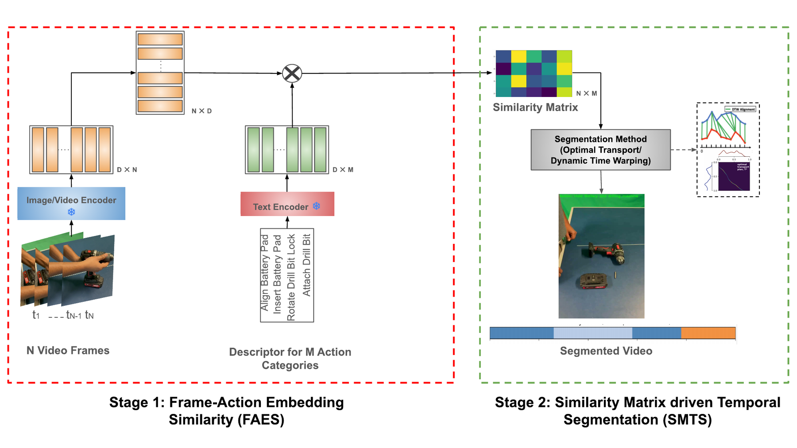
Each action label is normalised into a natural-language phrase (“pour_coffee” → “pour coffee”) and encoded by the VLM text encoder; frames are encoded by the vision encoder. Both are \(\ell_2\)-normalised row-wise and matched by cosine similarity.
Frame-level VLM predictions are temporally inconsistent because they are made independently. SMTS decodes the similarity matrix into a temporally consistent label sequence with an entropy-regularised optimal transport formulation carrying a temporal prior.
Let \(T\) be the number of frames, \(N\) the number of action labels and \(C\) the embedding dimension. With row-wise \(\ell_2\)-normalised frame embeddings \(\mathbf{X}\in\mathbb{R}^{T\times C}\) and action-label text embeddings \(\mathbf{A}\in\mathbb{R}^{N\times C}\), the similarity matrix and the per-frame classification probabilities are
We adopt the Action Segmentation OT (ASOT) decoder of Xu and Gould. Given \(\mathbf{S}\), we define a visual cost \(\mathbf{C}=\mathbf{1}-\mathbf{S}\) and a diagonal temporal prior \(R_{ij}=\left|\tfrac{i}{T}-\tfrac{j}{N}\right|\), which encourages monotone alignment. We then solve for a coupling \(\Pi\in\mathbb{R}^{T\times N}\):
where \(U(\mathbf{u},\mathbf{v})\) is the transport polytope and \(H(\Pi)\) the entropy of \(\Pi\). The entropy term makes the problem convex with a unique solution; \(\Pi^{\star}\) is computed with log-stabilised Sinkhorn iterations, which scale linearly in \(T\!\times\!N\) per iteration. Each frame is finally assigned the action with maximum transported mass, \(\hat{y}_t=\arg\max_{j}\Pi^{\star}_{t,j}\).
Training-free refers strictly to the absence of backpropagation-based weight updates. Both encoders are used off-the-shelf and are never fine-tuned. Optimal-transport hyperparameters are selected by grid search on a small set of held-out videos per dataset and then fixed for all experiments — we use \(\varepsilon = 0.07\), \(\alpha = 0.5\), \(r = 0.04\), \(\lambda_{\text{frames}} = 0.11\) and \(\lambda_{\text{actions}} = 0.01\). Unlike the unbalanced formulation of prior work, we find the balanced formulation gives the strongest results. Because the action order is unknown under action-set supervision, the ordering of action embeddings used to build the temporal prior is randomised.
| Method | Zero-Shot | Open-Vocab | Unsupervised | Weakly Sup. | Semi-Sup. | Training-Free |
|---|---|---|---|---|---|---|
| ASAL | ✗ | ✗ | ✓ | ✗ | ✗ | ✗ |
| COIN-SSL | ✗ | ✗ | ✗ | ✗ | ✓ | ✗ |
| NN-Viterbi | ✗ | ✗ | ✗ | ✓ | ✗ | ✗ |
| ASAL-SSL | ✗ | ✗ | ✗ | ✗ | ✓ | ✗ |
| TCCNet | ✗ | ✗ | ✗ | ✓ | ✗ | ✗ |
| UDE | ✗ | ✗ | ✓ | ✗ | ✗ | ✗ |
| CTC | ✗ | ✗ | ✗ | ✓ | ✗ | ✗ |
| D3TW | ✗ | ✗ | ✗ | ✓ | ✗ | ✗ |
| ASRF-unsup. | ✗ | ✗ | ✓ | ✗ | ✗ | ✗ |
| C2F-TCN | ✗ | ✗ | ✓ | ✗ | ✗ | ✗ |
| HTK | ✗ | ✗ | ✗ | ✓ | ✗ | ✗ |
| BCN | ✗ | ✗ | ✗ | ✓ | ✗ | ✗ |
| HVQ | ✗ | ✗ | ✓ | ✗ | ✗ | ✗ |
| U-OT | ✗ | ✗ | ✓ | ✗ | ✗ | ✗ |
| OVTAS (ours) | ✓ | ✓ | ✗ | ✓ | ✗ | ✓ |
Scroll the table horizontally →
Table 1. Comparison with other TAS methods by generalization ability and training-data needs. ✓ denotes applicability. OVTAS occupies a regime no prior method does: training-free, zero-shot and open-vocabulary at once.
We evaluate on three standard action segmentation benchmarks using their official evaluation splits, reporting the average across splits. We use five metrics: F1@10, F1@25, F1@50, Edit and frame Accuracy; Avg is the mean of those five. All four baselines are themselves training-free, zero-shot and open-vocabulary, and share the same frozen encoder features and prompts as OVTAS.
| Method | Backbone (#params) | F1@10 | F1@25 | F1@50 | Edit | Acc | Avg |
|---|---|---|---|---|---|---|---|
| Training-free zero-shot baselines | |||||||
| Random | — | 0.00 | 0.00 | 0.00 | 0.20 | 5.46 | 1.13 |
| ES-Mean | — | 1.49 | 0.13 | 0.04 | 5.40 | 5.63 | 2.54 |
| ES-Vote | — | 2.77 | 0.84 | 0.31 | 6.72 | 5.68 | 3.26 |
| ES-NRP | — | 6.81 | 5.90 | 2.73 | 8.00 | 7.24 | 6.14 |
| OVTAS (ours) — SigLIP | |||||||
| SigLIP-M1 | so400m-p16-256-i18n 877.96 M | 42.6 | 31.4 | 14.1 | 88.7 | 31.5 | 41.7 |
| SigLIP-M2 | large-p16-384 652.48 M | 42.4 | 31.3 | 14.2 | 87.9 | 31.4 | 41.4 |
| SigLIP-M3 | so400m-p14-384 1128.76 M | 42.7 | 30.5 | 14.3 | 87.3 | 31.3 | 41.2 |
| OVTAS (ours) — OpenCLIP | |||||||
| OpenCLIP-M1 | ViT-B/32 (laion2B-s34B-b79K) 151.28 M | 40.8 | 30.0 | 13.2 | 78.0 | 30.7 | 38.5 |
| OpenCLIP-M2 | ViT-B/16 (laion2B-s34B-b88K) 149.62 M | 41.1 | 31.1 | 13.8 | 79.2 | 31.4 | 39.3 |
| OpenCLIP-M3 | ViT-L/14 (laion2B-s32B-b82K) 427.62 M | 39.2 | 29.2 | 12.4 | 76.0 | 30.4 | 37.4 |
| OpenCLIP-M4 | ViT-H/14 (laion2B-s32B-b79K) 986.11 M | 39.6 | 29.2 | 13.5 | 77.7 | 29.5 | 37.9 |
| OpenCLIP-M5 | ViT-g/14 (laion2B-s34B-b88K) 1366.68 M | 39.1 | 28.8 | 12.4 | 73.7 | 30.1 | 36.8 |
| OVTAS (ours) — CLIP | |||||||
| CLIP-M1 | ViT-B/32 151.28 M | 41.8 | 31.2 | 13.8 | 88.6 | 31.3 | 41.4 |
| CLIP-M2 | ViT-B/16 149.62 M | 42.6 | 30.9 | 14.5 | 88.0 | 31.5 | 41.5 |
| CLIP-M3 | ViT-L/14 427.62 M | 41.3 | 30.0 | 13.6 | 85.5 | 30.8 | 40.2 |
| OVTAS (ours) — PECore | |||||||
| PECore-M1 | B/16-224 447.66 M | 39.8 | 28.4 | 13.6 | 79.1 | 30.3 | 38.2 |
| PECore-M2 | L/14-336 671.14 M | 38.8 | 26.7 | 11.6 | 68.8 | 28.5 | 34.9 |
| PECore-M3 | G/14-448 2419.27 M | 39.3 | 28.5 | 13.3 | 75.2 | 29.3 | 37.1 |
Scroll the table horizontally →
| Method | Backbone (#params) | F1@10 | F1@25 | F1@50 | Edit | Acc | Avg |
|---|---|---|---|---|---|---|---|
| Training-free zero-shot baselines | |||||||
| Random | — | 0.12 | 0.01 | 0.01 | 2.06 | 5.61 | 1.56 |
| ES-Mean | — | 7.08 | 3.99 | 1.67 | 13.00 | 5.99 | 6.35 |
| ES-Vote | — | 7.32 | 4.63 | 1.87 | 12.68 | 5.96 | 6.49 |
| ES-NRP | — | 7.75 | 5.35 | 2.01 | 8.29 | 12.96 | 7.27 |
| OVTAS (ours) — SigLIP | |||||||
| SigLIP-M1 | so400m-p16-256-i18n 877.96 M | 21.1 | 13.0 | 4.9 | 51.2 | 28.3 | 23.7 |
| SigLIP-M2 | large-p16-384 652.48 M | 21.3 | 13.8 | 5.4 | 51.1 | 28.1 | 23.9 |
| SigLIP-M3 | so400m-p14-384 1128.76 M | 20.8 | 13.0 | 4.9 | 50.7 | 27.9 | 23.5 |
| OVTAS (ours) — OpenCLIP | |||||||
| OpenCLIP-M1 | ViT-B/32 (laion2B-s34B-b79K) 151.28 M | 15.2 | 9.6 | 3.6 | 34.0 | 20.4 | 16.6 |
| OpenCLIP-M2 | ViT-B/16 (laion2B-s34B-b88K) 149.62 M | 15.9 | 10.0 | 3.8 | 35.3 | 21.0 | 17.2 |
| OpenCLIP-M3 | ViT-L/14 (laion2B-s32B-b82K) 427.62 M | 14.5 | 9.3 | 3.4 | 32.7 | 20.4 | 16.1 |
| OpenCLIP-M4 | ViT-H/14 (laion2B-s32B-b79K) 986.11 M | 14.8 | 9.4 | 3.5 | 33.1 | 20.2 | 16.2 |
| OpenCLIP-M5 | ViT-g/14 (laion2B-s34B-b88K) 1366.68 M | 14.4 | 9.1 | 3.3 | 31.9 | 19.9 | 15.7 |
| OVTAS (ours) — CLIP | |||||||
| CLIP-M1 | ViT-B/32 151.28 M | 19.7 | 13.0 | 4.9 | 44.7 | 25.6 | 21.6 |
| CLIP-M2 | ViT-B/16 149.62 M | 20.1 | 13.3 | 5.1 | 45.2 | 25.9 | 21.9 |
| CLIP-M3 | ViT-L/14 427.62 M | 19.2 | 12.7 | 4.7 | 43.9 | 25.2 | 21.2 |
| OVTAS (ours) — PECore | |||||||
| PECore-M1 | B/16-224 447.66 M | 15.3 | 10.3 | 3.5 | 37.0 | 22.5 | 17.7 |
| PECore-M2 | L/14-336 671.14 M | 13.6 | 8.5 | 2.9 | 30.4 | 19.6 | 15.0 |
| PECore-M3 | G/14-448 2419.27 M | 14.2 | 9.1 | 3.2 | 31.8 | 20.1 | 15.7 |
Scroll the table horizontally →
| Method | Backbone (#params) | F1@10 | F1@25 | F1@50 | Edit | Acc | Avg |
|---|---|---|---|---|---|---|---|
| Training-free zero-shot baselines | |||||||
| Random | — | 0.00 | 0.00 | 0.00 | 0.72 | 17.45 | 3.63 |
| ES-Mean | — | 20.56 | 11.97 | 3.63 | 22.39 | 17.14 | 15.14 |
| ES-Vote | — | 22.15 | 13.69 | 4.52 | 24.66 | 17.15 | 16.43 |
| ES-NRP | — | 24.38 | 19.46 | 8.73 | 36.35 | 11.83 | 20.15 |
| OVTAS (ours) — SigLIP | |||||||
| SigLIP-M1 | so400m-p16-256-i18n 877.96 M | 54.0 | 39.5 | 15.0 | 92.7 | 30.9 | 46.4 |
| SigLIP-M2 | large-p16-384 652.48 M | 54.0 | 39.5 | 15.2 | 92.7 | 30.9 | 46.5 |
| SigLIP-M3 | so400m-p14-384 1128.76 M | 53.8 | 39.2 | 15.1 | 92.5 | 30.8 | 46.3 |
| OVTAS (ours) — OpenCLIP | |||||||
| OpenCLIP-M1 | ViT-B/32 (laion2B-s34B-b79K) 151.28 M | 52.6 | 38.2 | 14.8 | 90.3 | 30.4 | 45.3 |
| OpenCLIP-M2 | ViT-B/16 (laion2B-s34B-b88K) 149.62 M | 53.5 | 38.9 | 15.4 | 91.2 | 30.7 | 45.9 |
| OpenCLIP-M3 | ViT-L/14 (laion2B-s32B-b82K) 427.62 M | 52.8 | 38.1 | 14.9 | 90.5 | 30.2 | 45.3 |
| OpenCLIP-M4 | ViT-H/14 (laion2B-s32B-b79K) 986.11 M | 53.0 | 38.4 | 15.0 | 90.8 | 30.3 | 45.5 |
| OpenCLIP-M5 | ViT-g/14 (laion2B-s34B-b88K) 1366.68 M | 52.3 | 37.7 | 14.7 | 89.8 | 29.9 | 44.8 |
| OVTAS (ours) — CLIP | |||||||
| CLIP-M1 | ViT-B/32 151.28 M | 54.0 | 39.5 | 15.2 | 92.6 | 30.9 | 46.4 |
| CLIP-M2 | ViT-B/16 149.62 M | 54.1 | 39.6 | 15.3 | 92.8 | 31.0 | 46.6 |
| CLIP-M3 | ViT-L/14 427.62 M | 53.7 | 39.1 | 15.0 | 92.1 | 30.7 | 46.1 |
| OVTAS (ours) — PECore | |||||||
| PECore-M1 | B/16-224 447.66 M | 53.9 | 39.4 | 15.4 | 91.6 | 30.7 | 46.2 |
| PECore-M2 | L/14-336 671.14 M | 52.1 | 37.3 | 14.5 | 88.7 | 29.6 | 44.4 |
| PECore-M3 | G/14-448 2419.27 M | 53.0 | 38.5 | 15.1 | 89.9 | 30.1 | 45.3 |
Scroll the table horizontally →
Table 2. Comparison of baselines and all 14 VLM variants across the three datasets. Avg is the mean of the F1 scores, Edit and Accuracy. The highest Avg within each family is highlighted. Baselines are reported to two decimals as in the paper; OVTAS rows to one.
| Dataset | Min (s) | Max (s) | Mean (s) |
|---|---|---|---|
| GTEA | 42.27 | 133.93 | 74.35 |
| Breakfast | 12.27 | 649.53 | 137.40 |
| 50 Salads | 251.60 | 605.00 | 385.25 |
Table 3. Video duration statistics, in seconds.
| Dataset | Min | Max | Mean |
|---|---|---|---|
| GTEA | 24 | 49 | 36.3 |
| Breakfast | 1 | 18 | 5.4 |
| 50 Salads | 15 | 27 | 20.7 |
Table 4. Ground-truth segments per video.
| Dataset | Min (s) | Max (s) | Mean (s) |
|---|---|---|---|
| GTEA | 0.07 | 44.73 | 1.94 |
| Breakfast | 0.07 | 386.00 | 20.95 |
| 50 Salads | 0.03 | 138.47 | 18.59 |
Table 5. Segment duration statistics. GTEA's mean segment lasts just 1.94 s against 20.95 s in Breakfast and 18.59 s in 50 Salads — the model must repeatedly localise boundaries within very short spans, leaving little room for temporal context aggregation.
We ablate Stage 1 by randomly permuting the frame and action-embedding features, and Stage 2 by taking per-frame argmax predictions instead of the OT decoding. Both stages prove critical: removing either produces significant drops across every metric on every dataset.
| Dataset | Ablated stage | F1@10 | F1@25 | F1@50 | Edit | Acc | Avg |
|---|---|---|---|---|---|---|---|
| 50 Salads | None (full pipeline) | 41.84 | 31.19 | 13.84 | 88.58 | 31.30 | 41.81 |
| w/o Stage 1 (FAES) | 6.71 ↓35.13 | 5.16 ↓26.03 | 2.27 ↓11.57 | 9.35 ↓79.23 | 28.53 ↓2.77 | 10.40 ↓31.41 | |
| w/o Stage 2 (SMTS) | 0.17 ↓41.67 | 0.08 ↓31.11 | 0.03 ↓13.81 | 0.88 ↓87.70 | 5.48 ↓25.82 | 3.01 ↓38.80 | |
| GTEA | None (full pipeline) | 21.33 | 13.76 | 5.44 | 51.07 | 28.08 | 23.14 |
| w/o Stage 1 (FAES) | 1.38 ↓19.95 | 0.60 ↓13.16 | 0.25 ↓5.19 | 17.39 ↓33.68 | 17.30 ↓10.78 | 7.38 ↓15.76 | |
| w/o Stage 2 (SMTS) | 1.18 ↓20.15 | 0.52 ↓13.24 | 0.16 ↓5.28 | 3.95 ↓47.12 | 5.41 ↓22.67 | 2.64 ↓20.50 | |
| Breakfast | None (full pipeline) | 54.26 | 39.60 | 15.34 | 92.44 | 30.89 | 46.51 |
| w/o Stage 1 (FAES) | 12.58 ↓41.68 | 8.36 ↓31.24 | 2.85 ↓12.49 | 18.87 ↓73.57 | 26.08 ↓4.81 | 13.75 ↓32.76 | |
| w/o Stage 2 (SMTS) | 1.16 ↓53.10 | 0.67 ↓38.93 | 0.27 ↓15.07 | 8.13 ↓84.31 | 17.50 ↓13.39 | 5.95 ↓40.56 |
Scroll the table horizontally →
Table 6. Stage ablations. Ablating Stage 1 corresponds to Random-ASOT; ablating Stage 2 corresponds to per-frame argmax decoding. Drops from the full pipeline are shown in blue.
We independently ablate the \(\ell_2\) normalisation in Stage 1 and the temporal prior in Stage 2, reporting on GTEA. Both design choices turn out to be load-bearing: without either one, the Avg falls to 2.69 and 3.95 respectively — close to the random baseline (1.56) and well below the strongest training-free baseline (7.27).
| Metric | Best | w/o Temporal Prior | w/o \(\ell_2\) Norm |
|---|---|---|---|
| F1@10 | 21.33 | 1.12 ↓20.21 | 2.36 ↓18.97 |
| F1@25 | 13.76 | 0.56 ↓13.20 | 1.12 ↓12.64 |
| F1@50 | 5.44 | 0.19 ↓5.25 | 0.62 ↓4.82 |
| Edit | 51.07 | 5.04 ↓46.03 | 7.23 ↓43.84 |
| Acc | 28.08 | 6.54 ↓21.54 | 8.43 ↓19.65 |
| Avg | 23.14 | 2.69 ↓20.45 | 3.95 ↓19.19 |
Table 7. Ablation on the temporal prior and \(\ell_2\) normalisation, on GTEA. Arrows show the drop from Best.
Averaging each family's performance across the three benchmarks yields a stable ranking: SigLIP outperforms all others, followed by CLIP, with OpenCLIP and PECore trailing. This ordering is consistent across all three datasets, suggesting the relative strength of each family is stable across domains.
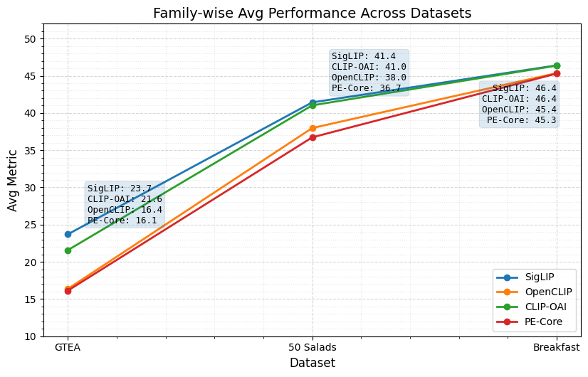
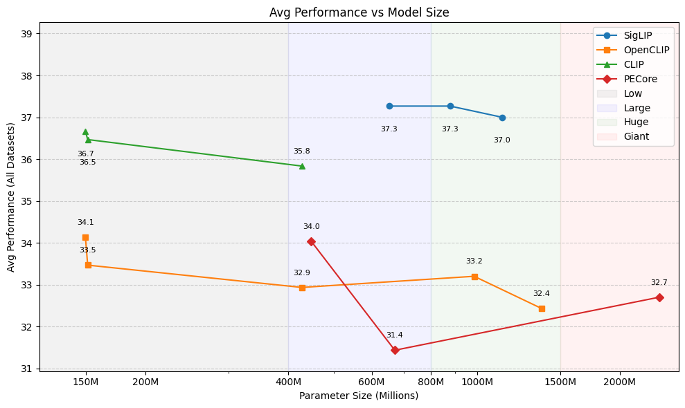
As future directions to close this gap, we point to (i) stronger text prompting and (ii) video-frame pre-processing such as cropping — together these may extract frame and action-label embeddings that do improve with increasing VLM size.
Examining per-action confusion on GTEA (SigLIP-M1) shows that take acts as a
dominant attractor for most manipulation actions, since its reaching motion overlaps with the
onset of nearly every other action. shake is almost entirely misclassified,
reflecting the limitation of image-trained VLMs on dynamic motions.
| GT action type | take | put | open | close | pour | scoop | spread | stir | fold | shake | SIL |
|---|---|---|---|---|---|---|---|---|---|---|---|
| Accuracy (%) | 41 | 36 | 35 | 35 | 37 | 21 | 41 | 54 | 37 | 1 | 22 |
| Top misclassified as | put | take | take | take | take | take | put | open | SIL | open | put |
| … (%) | 12 | 17 | 21 | 29 | 15 | 28 | 29 | 15 | 24 | 31 | 29 |
Scroll the table horizontally →
Table 8. Action-type confusion on GTEA (SigLIP-M1).
Performance decreases consistently as video length increases, across all three datasets: longer videos bring greater temporal variability and amplify error propagation in training-free segmentation.
| Video length | Acc | Edit | F1@10 | F1@25 | F1@50 | Avg |
|---|---|---|---|---|---|---|
| 0–60 s | 46.31 | 98.51 | 76.05 | 62.39 | 29.16 | 62.48 |
| 60–120 s | 40.99 | 96.28 | 63.98 | 50.89 | 20.26 | 54.48 |
| ≥120 s | 26.41 | 82.37 | 41.40 | 25.81 | 8.16 | 36.83 |
| Video length | Acc | Edit | F1@10 | F1@25 | F1@50 | Avg |
|---|---|---|---|---|---|---|
| 0–60 s | 27.75 | 50.65 | 24.38 | 17.14 | 8.38 | 25.66 |
| 60–120 s | 23.31 | 33.19 | 13.54 | 8.12 | 3.05 | 16.24 |
| ≥120 s | 16.82 | 12.99 | 6.25 | 2.27 | 0.57 | 7.78 |
| Video length | Acc | Edit | F1@10 | F1@25 | F1@50 | Avg |
|---|---|---|---|---|---|---|
| 240–360 s | 30.57 | 84.37 | 42.15 | 31.39 | 13.73 | 40.44 |
| 360–480 s | 32.92 | 75.01 | 41.73 | 31.34 | 14.96 | 39.19 |
| ≥480 s | 23.40 | 76.11 | 28.31 | 19.88 | 7.41 | 31.02 |
Table 9. Performance variation by video duration.
The density of fine-grained action boundaries matters just as much. GTEA videos comprise many brief segments (mean ≈ 36 per video) and the model performs worst there; Breakfast averages ≈ 5 segments and performs best; 50 Salads sits between the two. Tightly packed sequences of short actions are especially difficult.
| GT segments | Acc | Edit | F1@10 | F1@25 | F1@50 | Avg |
|---|---|---|---|---|---|---|
| 20–29 | 28.23 | 72.77 | 48.55 | 33.53 | 16.18 | 39.85 |
| 30–39 | 23.12 | 42.79 | 19.11 | 11.78 | 4.78 | 20.32 |
| 40–49 | 22.19 | 15.14 | 10.06 | 5.95 | 2.27 | 11.12 |
| GT segments | Acc | Edit | F1@10 | F1@25 | F1@50 | Avg |
|---|---|---|---|---|---|---|
| 0–4 | 42.79 | 98.69 | 71.90 | 59.28 | 26.25 | 59.78 |
| 5–9 | 29.00 | 88.56 | 50.52 | 35.06 | 12.60 | 43.15 |
| 10–14 | 25.11 | 72.61 | 38.81 | 23.16 | 7.82 | 33.50 |
| 15–19 | 22.14 | 32.30 | 21.54 | 12.73 | 4.35 | 18.61 |
| GT segments | Acc | Edit | F1@10 | F1@25 | F1@50 | Avg |
|---|---|---|---|---|---|---|
| 15–19 | 25.73 | 83.77 | 32.79 | 23.86 | 10.06 | 35.24 |
| 20–24 | 32.74 | 77.48 | 44.37 | 33.12 | 14.08 | 40.36 |
| 25–29 | 32.00 | 65.57 | 38.57 | 24.62 | 14.18 | 34.99 |
Table 10. Performance variation by the number of ground-truth action segments per video.
Each pair of colour bars shows the ground-truth segmentation (top) above the OVTAS prediction (bottom) for one video, with segments coloured by action label.
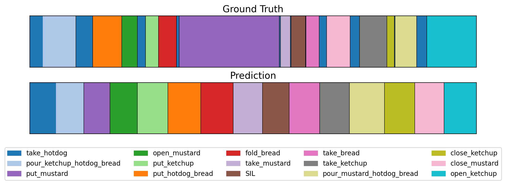
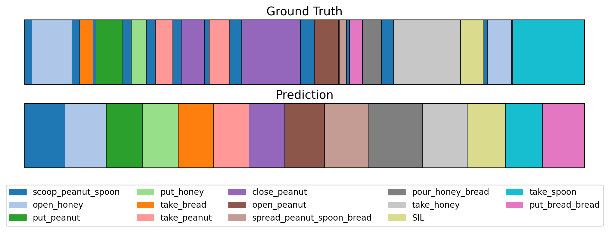
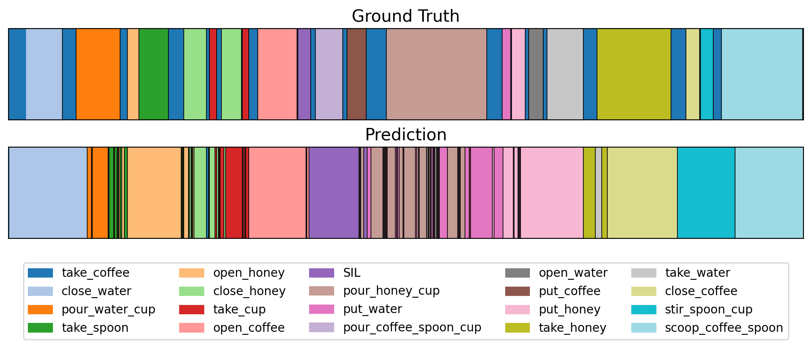
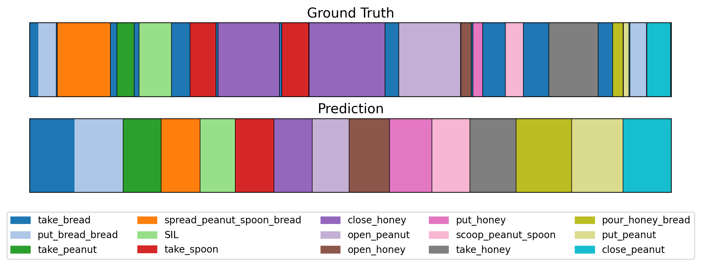
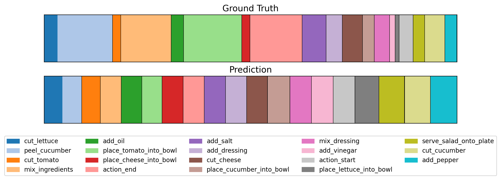
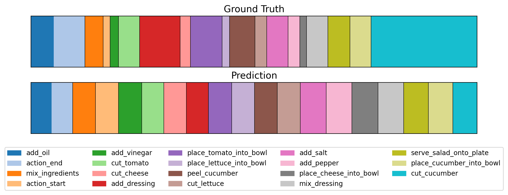
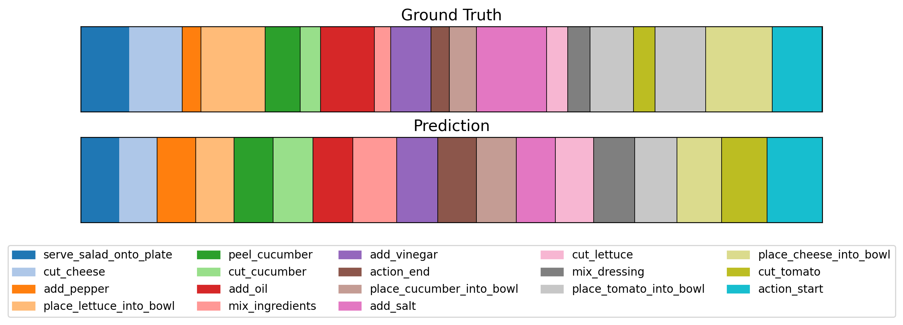
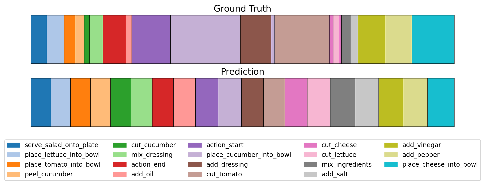
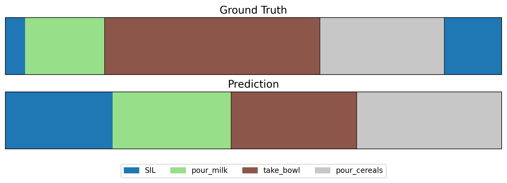
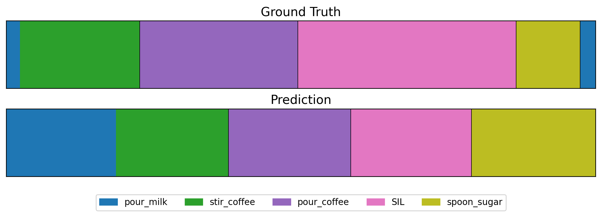
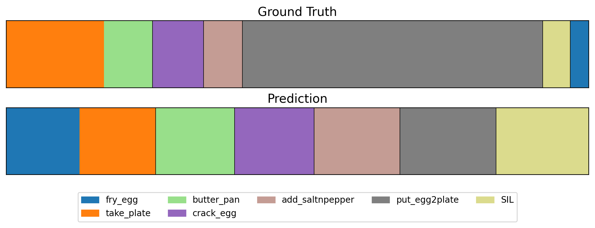
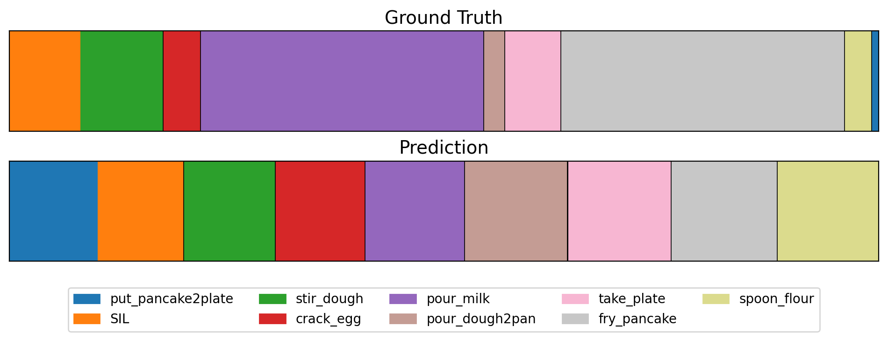
Figure 5. Qualitative segmentation results of OVTAS. Top bar: ground truth. Bottom bar: prediction.
shake is
almost entirely misclassified on GTEA, and take acts as a dominant attractor
because its reaching motion overlaps with the onset of nearly every other action.
@article{unmesh2026ovtas,
title = {Exploring Vision-Language Models for Open-Vocabulary
Zero-Shot Action Segmentation},
author = {Unmesh, Asim and Ramesh, Kaki and Patel, Mayank and
Jain, Rahul and Ramani, Karthik},
journal = {arXiv preprint arXiv:2602.21406},
year = {2026}
}
We acknowledge the Feddersen Distinguished Professorship Funds. This work was also supported by NSF under the Partnership for Innovation: Technology Transfer (PFI-TT) 2329804. Any opinions, findings, and conclusions expressed in this material are those of the authors and do not necessarily reflect the views of the funding agency.